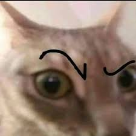

Tener un gato 🤨 en casa es como vivir con un pequeño crítico de arte que solo se interesa por dos cosas: la comida y el sofá. Este felino, con su mirada de "¿en serio estás haciendo eso?" 🤨, se convierte en el mejor compañero para tus momentos más ridículos. Imagina intentar ver una serie mientras él decide que tu teclado es el mejor lugar para una siesta 🤨, o que la caja vacía que guardaste durante meses es, en realidad, su nueva mansión. Y no olvidemos su habilidad única para aparecer en el momento menos oportuno, justo cuando estás tratando de impresionar a alguien 🤨. Con un gato 🤨, cada día es una comedia, y tú eres el protagonista de la hilarante obra del caos cotidiano. ¡No hay duda de que necesitas uno! 🤨
